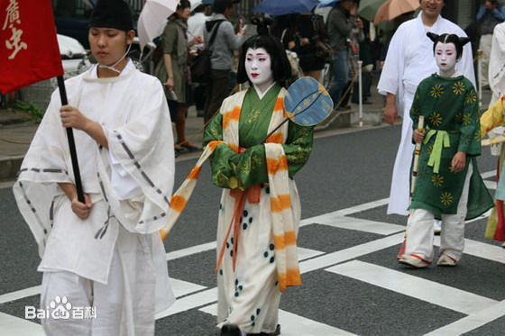
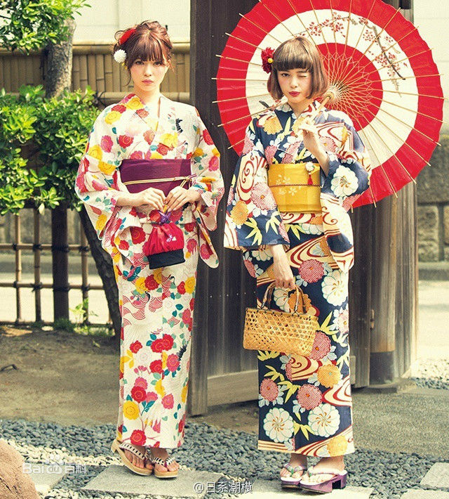
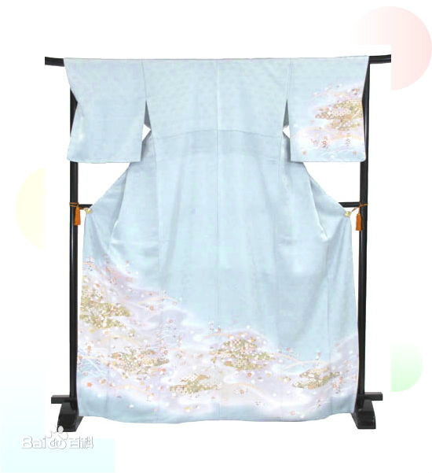

和服
和服（きもの，kimono) ，是日本的民族服饰。 [1] 江户时代以前称吴服，语出《古事记》、《日本书纪》、《松窗梦语》，在称为和服之前，日本的服装被称为“着物”，而日本古代所称的“吴服”是“着物”的一种。
和服可分为公家着物和武家着物。现今所谓和服实即古时之小袖， [2] 小袖的表着化始自室町时代 [3] ，贵族的下着白小袖逐渐成为庶民的表衣。 [4] “着物”除了包括“吴服"之外还包括肩衣袴、源自平安时代的狩衣等等，这些都非源自吴服，而是源自本土的传统服饰。十二单则是由奈良时代的裳唐衣加以改良而成，之后又有变化和创新。
日本江户时代的《装束要领抄》指出：“和服沿唐衣服而其制大同小异益。本邦通中华也始于汉，盛于唐世时。朝廷命贤臣因循于徃古之衣冠而折衷于汉唐之制，其好者沿焉不好者草焉而为。本邦之文物千岁不易之定式也。”
和服可分为公家着物和武家着物。现今所谓和服实即古时之小袖， [2] 小袖的表着化始自室町时代 [3] ，贵族的下着白小袖逐渐成为庶民的表衣。 [4] “着物”除了包括“吴服"之外还包括肩衣袴、源自平安时代的狩衣等等，这些都非源自吴服，而是源自本土的传统服饰。十二单则是由奈良时代的裳唐衣加以改良而成，之后又有变化和创新。
日本江户时代的《装束要领抄》指出：“和服沿唐衣服而其制大同小异益。本邦通中华也始于汉，盛于唐世时。朝廷命贤臣因循于徃古之衣冠而折衷于汉唐之制，其好者沿焉不好者草焉而为。本邦之文物千岁不易之定式也。”
- 
- 
- 